Học máy
Bài 1b: Giới thiệu về học máy
Trường ĐH Công nghệ – Đại học Quốc gia Hà Nội
Nội dung
1.
Học máy là gì?
Học máy đã làm được gì?
- 2016 — đánh bại nhà vô địch Cờ vây thế giới (AlphaGo).
- 2019 — đánh bại game thủ StarCraft chuyên nghiệp.
- 2020 — phát hiện kháng sinh mới halicin.
- 2020 — sinh văn bản mạch lạc (GPT-3).
- 2022 — tạo ảnh từ mô tả văn bản (DALL·E, Imagen).
- Nay — mô hình ngôn ngữ lớn đa phương thức.
2016 — AlphaGo
Học máy đánh bại nhà vô địch Cờ vây — môn cờ từng được xem là quá phức tạp cho máy.
2019 — AlphaStar
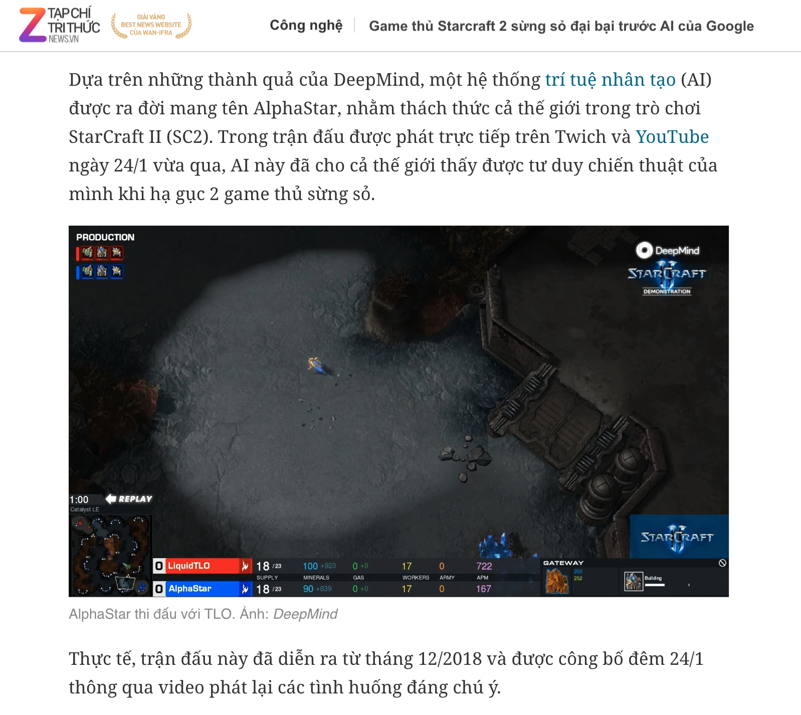
Học máy thắng game thủ StarCraft chuyên nghiệp — môi trường thông tin không đầy đủ.
2020 — Kháng sinh halicin
Duyệt hơn 100 triệu phân tử → tìm ra halicin — kháng sinh khác xa thuốc đã biết.
2020 — GPT-3
Sinh văn bản tự nhiên ở quy mô chưa từng có — bước ngoặt cho mô hình ngôn ngữ lớn (Brown et al., 2020).
2022 — DALL·E 2
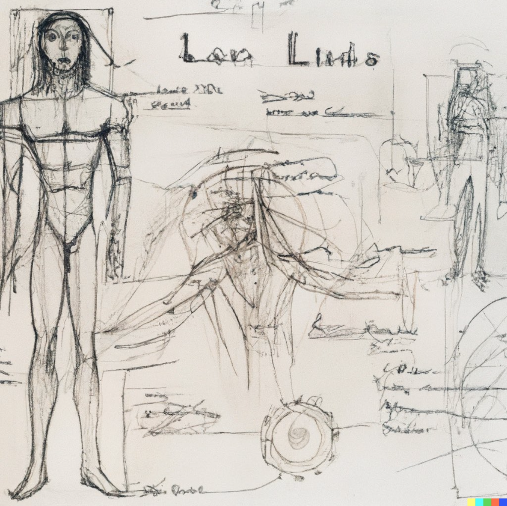
"Leonardo da Vinci early sketches of a cyborg" — mở ra giai đoạn mô hình sinh.
Từ 2022 — LLM
LLM trở thành nền tảng cho trợ lý đa năng — viết mã, tổng hợp tài liệu, suy luận hình ảnh.
Học máy là gì?
- Thay vì các luật cứng (if/else) → học từ dữ liệu.
- Đầu ra: dự đoán, phân loại, ra quyết định.
- Học máy = mô hình + dữ liệu + đánh giá.
Khung T-P-E của Mitchell
- \(T\) — nhiệm vụ (task) cần làm.
- \(P\) — độ đo (performance) đánh giá làm tốt cỡ nào.
- \(E\) — kinh nghiệm (experience), tức dữ liệu được học.
Thuật toán \(\mathcal{A}\) "học" khi \(P\) của \(\mathcal{A}\) trên \(T\) tăng theo \(E\).
Khung T-P-E — minh hoạ
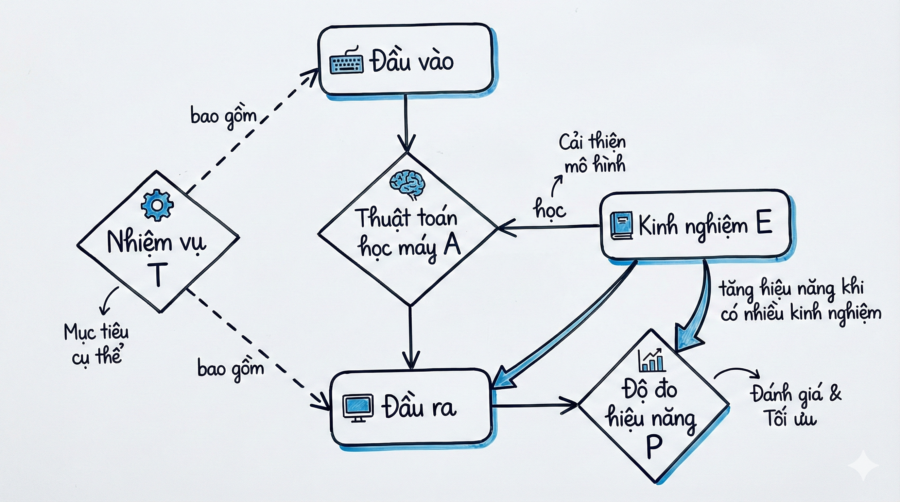
Càng nhiều kinh nghiệm \(E\), hiệu năng \(P\) trên nhiệm vụ \(T\) càng tăng.
Phân loại email — T, P, E là gì?
- \(T\): phân loại email spam / không spam.
- \(P\): độ chính xác, precision, recall.
- \(E\): email đã gán nhãn.
⭐️ Khi phân bố dữ liệu thay đổi (spam mới) → mô hình phải cập nhật.
MNIST — "Hello World" của học máy

Ảnh chữ số viết tay 28×28 pixel — bộ dữ liệu kinh điển nhất để thử thuật toán học máy.
MNIST — T, P, E là gì?
- \(T\): nhận dạng chữ số 0–9 từ ảnh 28×28.
- \(P\): độ chính xác trên ảnh chưa thấy.
- \(E\): ảnh chữ số đã gán nhãn (60 000 mẫu huấn luyện).
Vì sao học máy phát triển?
- Dữ liệu lớn hơn.
- Tính toán mạnh hơn (GPU/TPU).
- Mô hình & thuật toán tốt hơn.
Học máy ở khắp nơi
- Tìm kiếm / gợi ý / quảng cáo.
- Thị giác: nhận dạng ảnh, khuôn mặt, y học.
- Ngôn ngữ: dịch máy, hỏi–đáp, trợ lý ảo.
- Tài chính, an ninh, khoa học.
Tiền lương — một bài toán hồi quy
Dự đoán tiền lương từ tuổi, năm, trình độ học vấn.
- Đầu ra liên tục → hồi quy.
- 3000 bản ghi nam giới tại Mỹ.
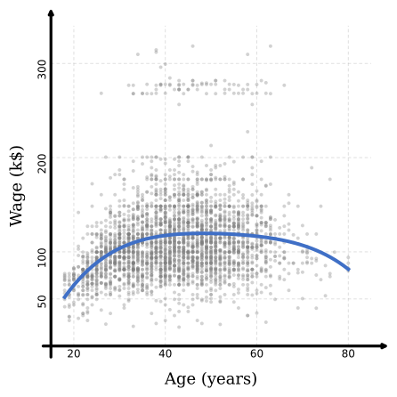
Tiền lương tăng đến ~60 rồi giảm — quan hệ không tuyến tính.
Tiền lương theo từng đặc trưng
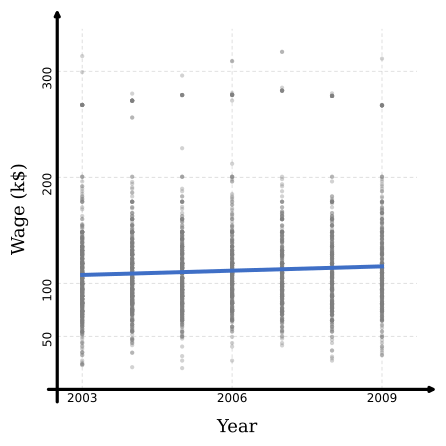
Tiền lương tăng nhẹ theo thời gian (~10 nghìn $ / 6 năm).
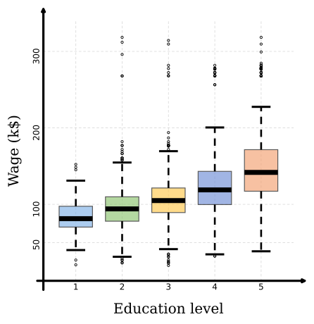
Tiền lương tăng theo trình độ học vấn — hộp cao dần.
⭐️ Mô hình tốt nhất khi dùng đồng thời cả 3 đặc trưng.
Chứng khoán — một bài toán phân loại
Dự đoán thị trường ngày mai tăng hay giảm từ vài ngày trước.
- Đầu ra rời rạc → phân loại.
- 1250 ngày S&P 500 (2001–2005).
- Tín hiệu từ vài ngày gần nhất rất yếu.
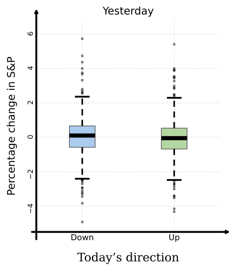
Hai hộp gần như trùng — không tách được bằng "mắt thường".
Mô hình phức tạp hơn vẫn hữu ích
Tín hiệu yếu nhưng không phải bằng 0. Mô hình phù hợp có thể bóc được.
- QDA đạt ~60% độ chính xác.
- Đủ giá trị thực tiễn.
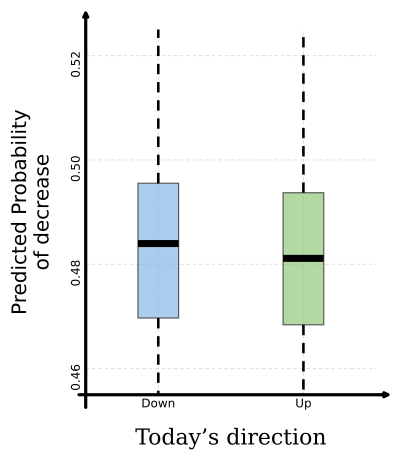
Hộp xác suất dự đoán đã tách rõ giữa Down và Up.
Biểu hiện gen — học không giám sát
Không có biến đầu ra → tìm cấu trúc ẩn.
- 64 dòng tế bào × 6830 biểu hiện gen.
- Mục tiêu: nhóm dòng tế bào tương tự.
- Tự nhiên có ~4 cụm — chọn số cụm "đúng" rất khó.
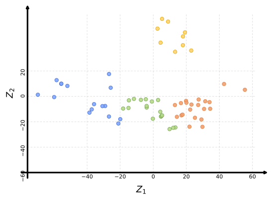
Hai trục chính \(Z_1, Z_2\) — màu = cụm phát hiện.
2.
Bài toán học
Khung bài toán chung
- Đầu vào \(X\): Đặc trưng (features/predictors).
- Đầu ra \(Y\): Dự đoán/nhãn (response/label).
- Mô hình hoá: Giả sử \(Y = f(X) + \varepsilon\).
- Trong đó: \(\varepsilon\) là nhiễu (noise) ngẫu nhiên không phụ thuộc vào \(X\) và có kỳ vọng \(\mathbb{E}[\varepsilon | X] = 0\).
- Mục tiêu: Học hàm \(\hat{f}\) từ dữ liệu \((x_i, y_i)\).
Ý nghĩa của nhiễu
- Do yếu tố chưa quan sát / đo đạc sai / ngẫu nhiên.
- Nhiễu luôn tồn tại → không thể có mô hình dự đoán hoàn hảo.
⚠️ Lưu ý: Ta giả sử nhiễu có kỳ vọng \(\mathbb{E}[\varepsilon | X] = 0\). Giả thuyết này thường hợp lý và giúp đơn giản hoá mô hình.
Đặc trưng là gì?
- Biểu diễn dữ liệu thô thành các tín hiệu hữu ích cho mô hình.
- Ảnh → pixel hoặc embedding.
- Văn bản → túi từ (bag-of-words) hoặc embedding.
- Chuỗi thời gian → thống kê trên cửa sổ trượt.
Quảng cáo tác động đến doanh số ra sao?
- \(X\): ngân sách quảng cáo trên Đài / Báo / TV.
- \(Y\): doanh số bán hàng.
Câu hỏi: kênh quảng cáo nào tác động mạnh? Dự đoán doanh số thế nào?
Quảng cáo tác động đến doanh số ra sao?
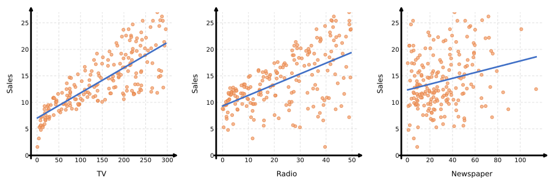
Đường xanh = hồi quy tuyến tính bình phương tối thiểu cho từng kênh — TV tác động mạnh nhất.
Hàm thật \(f\) thường không biết trước
- Quan hệ thu nhập ↔ số năm học là phi tuyến.
- Đây là dữ liệu mô phỏng (biết hàm sinh).
- Thực tế, hàm thật \(f\) không biết → phải ước lượng bằng \(\hat{f}\).
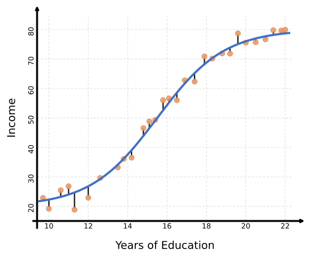
Chấm = dữ liệu quan sát · đường xanh = hàm thật \(f\).
3.
Dự đoán
vs.
Diễn giải
Hai mục tiêu của học máy
Dự đoán chính xác nhất không đồng nghĩa với hiểu biết sâu sắc nhất về dữ liệu.
- Dự đoán (prediction): tối ưu độ chính xác của \(\hat{Y} = \hat{f}(X)\).
- Diễn giải (inference): hiểu quan hệ giữa \(X\) và \(Y\).
Dự đoán
- Đầu ra: \(\hat{Y} = \hat{f}(X)\).
- Ưu tiên độ chính xác trên dữ liệu chưa thấy.
- Có thể chấp nhận mô hình như hộp đen — không cần hiểu cơ chế bên trong.
Sai số dự đoán phân rã ra sao?
Kỳ vọng sai số bình phương của \(\hat{Y}\):
\[ \mathbb{E}\!\left[(Y-\hat{Y})^{2}\right] = \underbrace{\mathbb{E}\!\left[\bigl(f(X)-\hat{f}(X)\bigr)^{2}\right]}_{\text{sai số giảm được}} + \underbrace{\mathrm{Var}(\varepsilon)}_{\text{sai số không giảm được}} \]- Sai số giảm được: do mô hình \(\hat{f}\) chưa khớp đúng \(f\) — chọn mô hình tốt hơn sẽ giảm.
- Sai số không giảm được: do nhiễu \(\varepsilon\) — không thể loại bỏ dù mô hình hoàn hảo.
Diễn giải
Mục tiêu là hiểu chứ không phải đoán đúng nhất:
- Biến nào quan trọng trong dự đoán?
- Quan hệ giữa \(X\) và \(Y\) là tuyến tính hay phi tuyến?
- Ví dụ — quảng cáo → doanh thu: kênh nào ảnh hưởng mạnh nhất? Quan hệ có tuyến tính không?
Đánh đổi: chính xác vs. diễn giải
- Mô hình phức tạp → chính xác cao hơn, khó diễn giải hơn.
- Mô hình đơn giản → dễ diễn giải hơn, chính xác có thể thấp hơn.
⭐️ Tuỳ ứng dụng — y tế, tài chính thường ưu tiên diễn giải; thị giác, ngôn ngữ thường ưu tiên dự đoán.
4.
Chọn mô hình
Bài toán: tìm \(\hat{f}\) gần \(f\)
- Cho tập huấn luyện \(n\) cặp \((x_i, y_i)\) đã quan sát.
- Mục tiêu: tìm \(\hat{f}\) sao cho \(\hat{f}(X) \approx Y\) trên mọi \((X, Y)\) — kể cả dữ liệu chưa thấy.
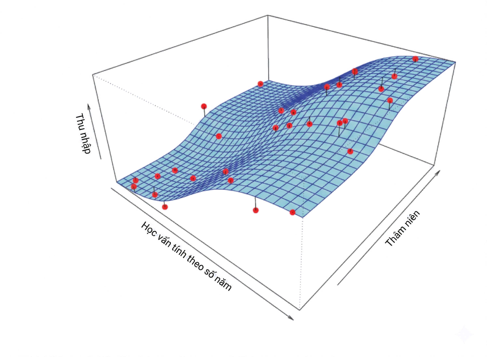
Dữ liệu phi tuyến · đường xanh = hàm thật \(f\) (không biết trước).
Hai loại mô hình chính
- Mô hình có tham số (parametric): giả định dạng hàm, học hữu hạn tham số.
- Mô hình phi tham số (nonparametric): không giả định dạng hàm, linh hoạt hơn.
Khác biệt chính ở độ linh hoạt và khả năng diễn giải.
Mô hình có tham số
Giả sử dạng hàm tuyến tính \( f(X) = \beta_0 + \beta_1 X_1 + \ldots + \beta_p X_p \) → học = ước lượng các \(\beta_j\).
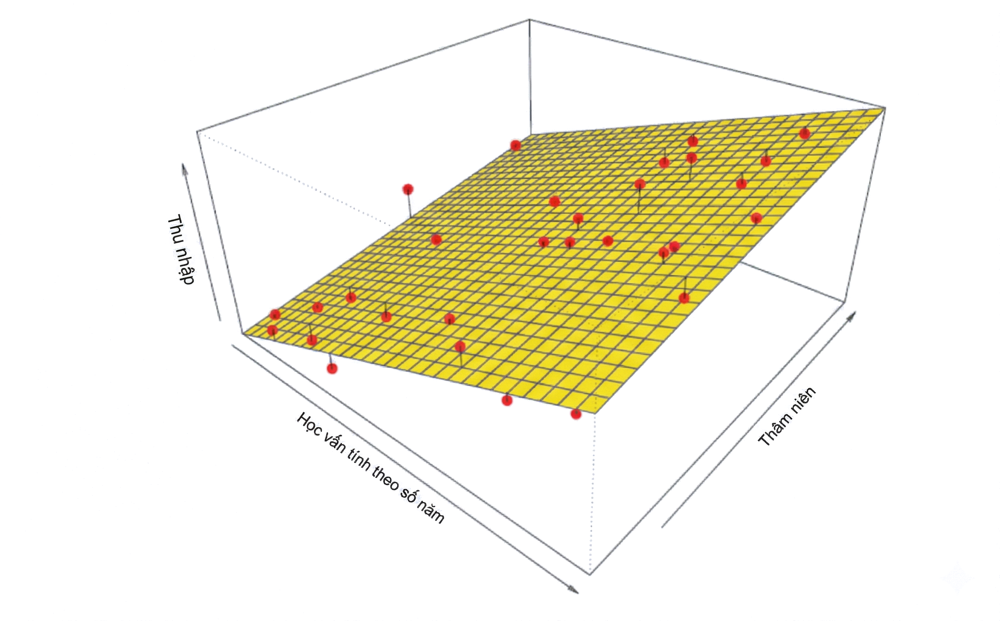
Đường khớp là hàm tuyến tính — đơn giản, nhưng có thể chệch khỏi \(f\) thật.
Mô hình có tham số — đặc điểm
- Ưu điểm: đơn giản, nhanh, dễ diễn giải.
- Rủi ro: kém linh hoạt → dễ khớp dưới (underfit) nếu giả định dạng hàm sai.
Mô hình phi tham số
- Không giả định dạng cho \(f\).
- Để dữ liệu "tự nói lên" hình dáng của \(f\).
- Số tham số hữu hiệu tăng theo dữ liệu.
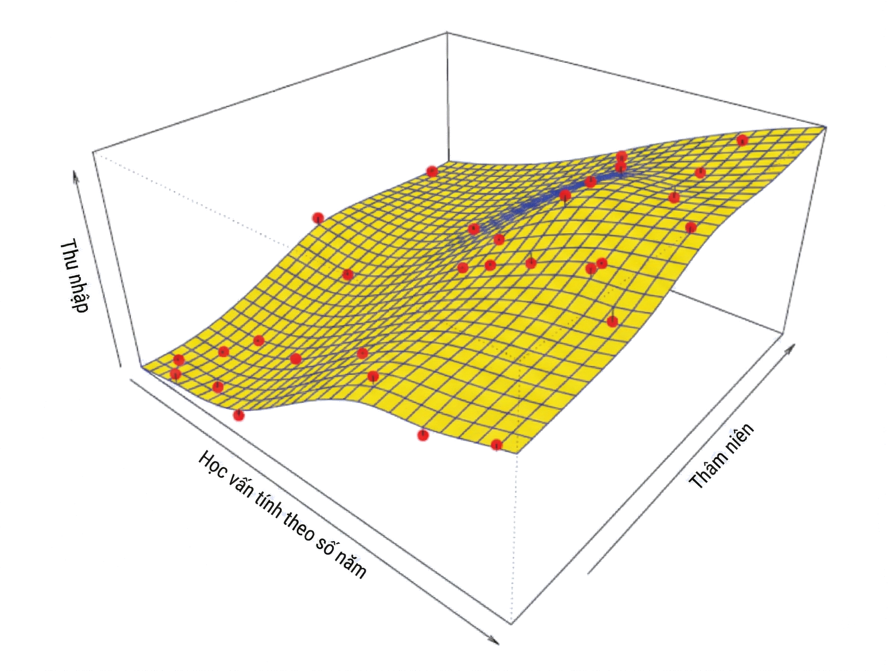
Đường khớp uốn theo dữ liệu — bám sát \(f\) thật hơn.
Mô hình phi tham số — đặc điểm
- Ưu điểm: mô tả được quan hệ phức tạp.
- Rủi ro: cần nhiều dữ liệu, dễ khớp quá (overfit), khó diễn giải.
Độ chính xác vs. Khả năng diễn giải
Vì sao đôi khi cần mô hình đơn giản?
Mô hình linh hoạt có nhiều tham số → ba cái giá phải trả:
- Tính toán tốn kém hơn khi ước lượng và dự đoán.
- Khó diễn giải — không nói được biến nào quan trọng.
- Dữ liệu ít → ước lượng kém tin cậy, dễ khớp quá (overfit).
5.
Các kiểu học
Bốn kiểu học chính
- Có giám sát (supervised) — dữ liệu có nhãn.
- Không giám sát (unsupervised) — dữ liệu không nhãn.
- Bán giám sát (semi-supervised) — chỉ một phần có nhãn.
- Tăng cường (reinforcement) — học qua tương tác với môi trường.
Học có giám sát
- Dữ liệu có nhãn: cặp \((x_i, y_i)\).
- Mục tiêu: học hàm \(\hat{f}\) để dự đoán \(Y\) từ \(X\).
- Hai dạng chính: phân lớp (\(Y\) rời rạc) và hồi quy (\(Y\) liên tục).
- Ví dụ: lọc thư rác (phân lớp), quảng cáo → doanh thu (hồi quy).
Phân lớp vs. Hồi quy
- Phân lớp: \(Y\) rời rạc (2 hoặc nhiều lớp). Độ đo: độ chính xác, F1.
- Hồi quy: \(Y\) liên tục. Độ đo: MSE, MAE.
Học không giám sát
- Dữ liệu chỉ có \(x_i\), không có nhãn.
- Mục tiêu: tìm cấu trúc hoặc mẫu ẩn trong dữ liệu.
- Ví dụ: phân cụm, giảm chiều.
Phân cụm — không có nhãn, vẫn tìm được nhóm
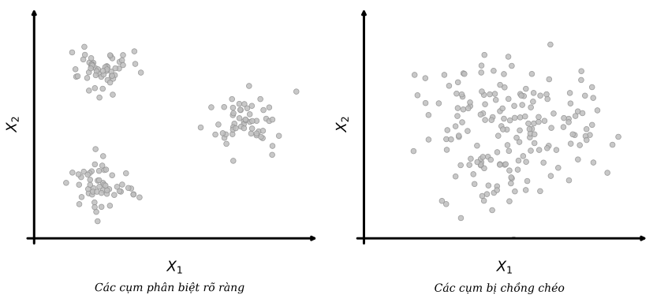
Mắt thường có thể đoán ra ~3 nhóm — thuật toán phân cụm tìm chúng tự động.
Phân cụm — kết quả gán nhóm
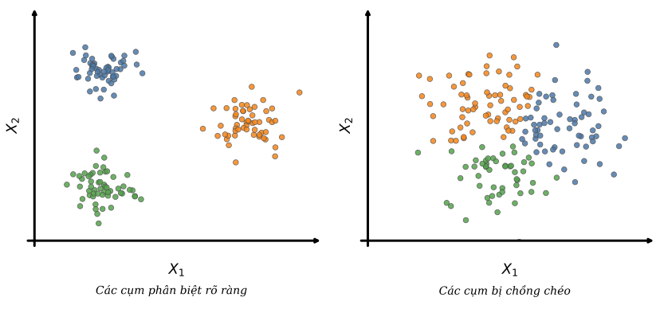
Vùng chồng lấn giữa các cụm là thách thức chính — chọn số cụm đúng cũng khó.
Học bán giám sát
- Một phần dữ liệu có nhãn, phần còn lại không.
- Mục tiêu: tận dụng dữ liệu không nhãn để cải thiện mô hình.
- Hữu ích khi nhãn đắt hoặc khó thu thập — ảnh y khoa, văn bản chuyên ngành.
Học tăng cường
- Tác tử tương tác với môi trường qua chuỗi hành động.
- Mục tiêu: học chiến lược để tối đa hoá phần thưởng tích luỹ.
- Ứng dụng: chơi game, điều khiển robot, tối ưu hệ thống.
Các kỹ thuật học khác
- Học đa nhiệm vụ — đồng thời nhiều nhiệm vụ liên quan.
- Học chủ động — chọn mẫu nào đáng gán nhãn nhất.
- Học trực tuyến — cập nhật mô hình khi dữ liệu đến từng đợt.
- Học chuyển đổi — tận dụng kiến thức từ tác vụ trước.
- Học kết hợp — gộp nhiều mô hình thành mô hình mạnh hơn.
⭐️ Đọc thêm tại Mục 1.4.5 — Giáo trình "Học máy thống kê".
6.
Đánh giá mô hình học máy
Mục tiêu đánh giá
- Hiệu năng quan trọng nhất là ở trên dữ liệu chưa thấy.
- Không đánh giá mô hình bằng dữ liệu đã dùng để huấn luyện.
- Cần tách tập huấn luyện (training) / kiểm thử (test) (và có thể tập xác thực (validation)).
MSE — đánh giá hồi quy
Lỗi bình phương trung bình (MSE) là độ đo phổ biến nhất:
Trên dữ liệu huấn luyện
\[ \frac{1}{n}\sum_{i=1}^n \bigl(y_i - \hat{f}(x_i)\bigr)^2 \]Trên dữ liệu kiểm thử
\[ \mathrm{avg}\bigl(y_0 - \hat{f}(x_0)\bigr)^2 \]Ta quan tâm chủ yếu đến MSE kiểm thử — đo khả năng tổng quát hoá.
Mô hình quá đơn giản hay quá phức tạp đều tệ
Dữ liệu gần tuyến tính
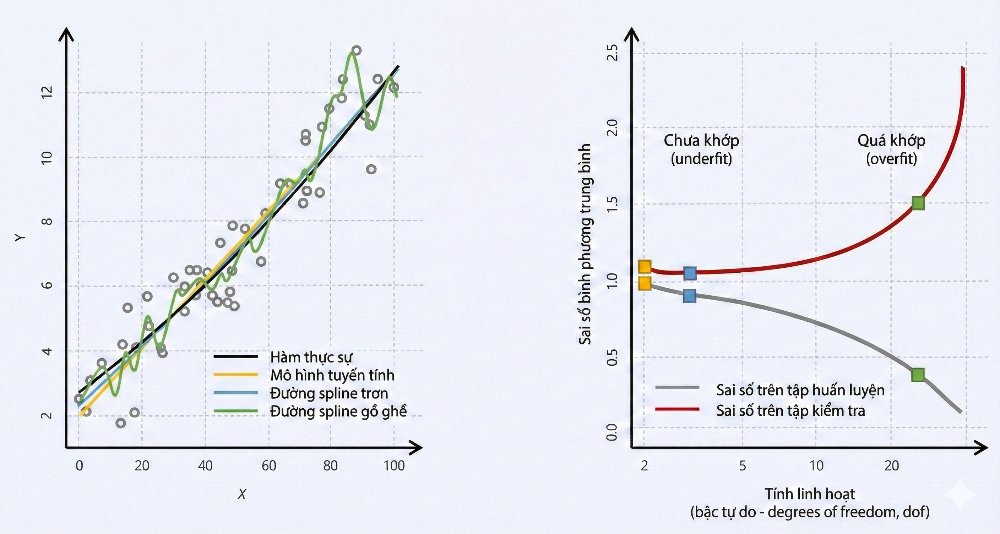
Mô hình tuyến tính khớp tốt — phức tạp hơn không cải thiện kiểm thử.
Mô hình quá đơn giản hay quá phức tạp đều tệ
Dữ liệu phi tuyến vừa phải
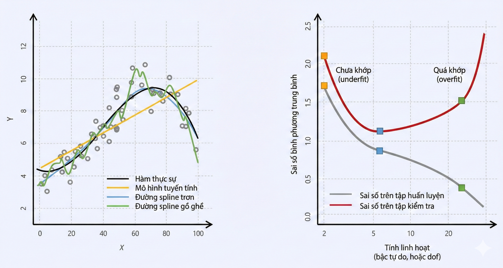
Mô hình tuyến tính khớp dưới — cần linh hoạt vừa phải để bám hàm thật.
Mô hình quá đơn giản hay quá phức tạp đều tệ
Dữ liệu phi tuyến mạnh
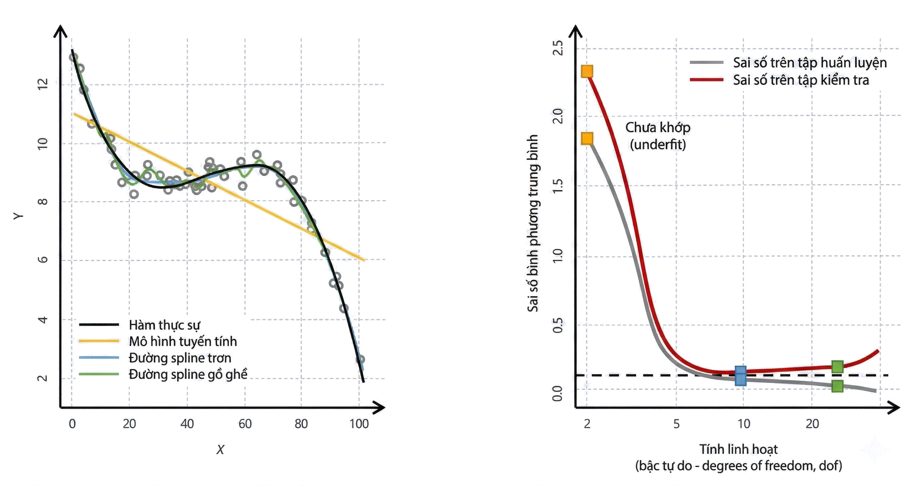
Mô hình quá phức tạp khớp quá — MSE huấn luyện thấp nhưng kiểm thử tệ.
Đánh giá mô hình phân lớp
Thường dùng tỉ lệ phân lớp sai. Gọi \(I(\cdot)\) là hàm chỉ thị (\(I=1\) nếu đúng, \(I=0\) nếu sai):
Lỗi huấn luyện
\[ \frac{1}{n}\sum_{i=1}^{n} I(y_i \neq \hat{y}_i) \]Lỗi kiểm thử
\[ \mathrm{avg}\bigl(I(y_0 \neq \hat{y}_0)\bigr) \]Bộ phân loại Bayes — chuẩn vàng
Bộ phân loại tối ưu (đạt lỗi kiểm thử nhỏ nhất) là:
\[ \arg\max_{j=1,\ldots,k}\;\Pr(Y=j \mid X=x_0) \]- Tính được khi biết phân phối xác suất thật — chỉ với dữ liệu mô phỏng.
- Với dữ liệu thực, ta chỉ ước lượng gần đúng (LDA, QDA, hồi quy logistic, …).
Biên quyết định Bayes
- 100 quan sát thuộc 2 nhóm.
- Biên Bayes: các điểm thoả \(\Pr(Y=1\mid X)=0.5\) — nét đứt.
- Tỉ lệ lỗi Bayes: \(1-\mathbb{E}(\max_j \Pr(Y=j\mid X))\) — sai số không giảm được.
- Ở đây: tỉ lệ lỗi Bayes = 0.1304.
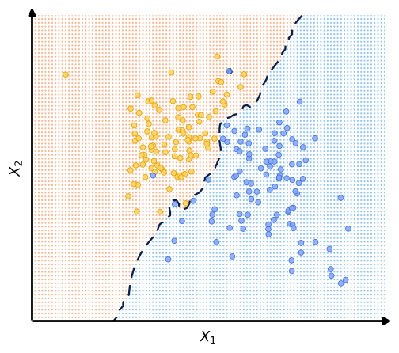
Nét đứt = biên Bayes — không bộ phân loại nào làm tốt hơn.
kNN — láng giềng gần nhất
Gán nhãn cho \(x_0\) theo đa số trong \(k\) điểm gần nhất:
\[ \arg\max_{j}\;\frac{1}{k}\sum_{i\in \mathcal{N}_0} I(y_i=j) \]\(\mathcal{N}_0\) = tập \(k\) điểm dữ liệu gần \(x_0\) nhất.
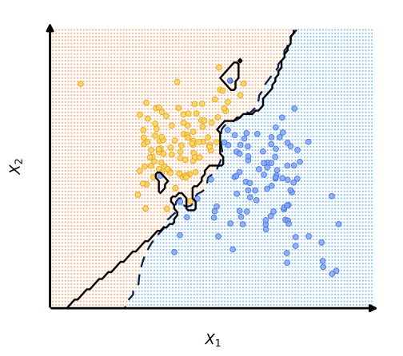
\(k=1\): biên ngoằn ngoèo bám sát từng điểm → khớp quá.
\(k\) nhỏ khớp quá — \(k\) lớn khớp dưới
\(k=1\): biên ngoằn ngoèo → khớp quá.
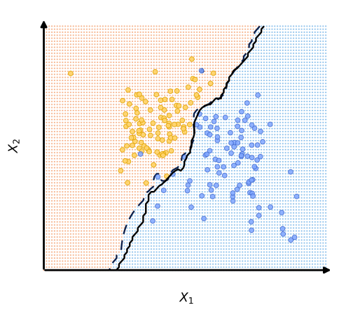
\(k=10\): biên mượt, bám gần biên Bayes — vừa phải.
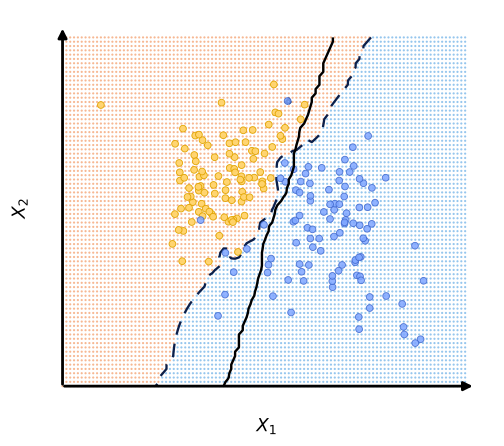
\(k=100\): biên gần thẳng → khớp dưới.
Lỗi vs. độ phức tạp mô hình
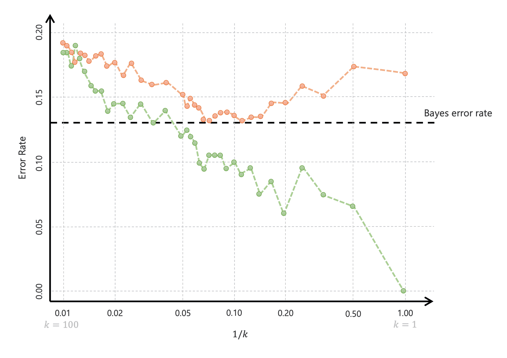
Lỗi huấn luyện giảm đều khi mô hình phức tạp lên — nhưng lỗi kiểm thử có điểm tối ưu.
7.
Đánh đổi
Bias–Variance
Lỗi kiểm thử phân rã thành ba thành phần
Đường cong lỗi kiểm thử có dạng "U" vì MSE phân rã ra 3 phần:
\[ \mathbb{E}\bigl(y_0-\hat{f}(x_0)\bigr)^2 = \underbrace{\mathrm{Var}(\hat{f}(x_0))}_{\text{phương sai}} + \underbrace{\bigl[\mathrm{Bias}(\hat{f}(x_0))\bigr]^2}_{\text{độ chệch}^2} + \underbrace{\mathrm{Var}(\varepsilon)}_{\text{nhiễu}} \]Linh hoạt mô hình điều khiển độ chệch ↔ phương sai theo hai chiều ngược nhau — phải cân bằng.
Độ chệch và phương sai nói lên gì?
- Độ chệch (bias): sai lệch có hệ thống giữa \(\hat{f}\) trung bình và \(f\) thật. \( \;\;\mathrm{Bias}(\hat{f}(x_0)) = \mathbb{E}(\hat{f}(x_0)) - f(x_0)\)
- Phương sai (variance): mức độ \(\hat{f}\) thay đổi giữa các tập huấn luyện khác nhau.
- Mô hình đơn giản → độ chệch lớn, phương sai nhỏ. Mô hình phức tạp → ngược lại.
Chứng minh phân rã Bias-Variance
Khai triển bình phương và dùng \(\mathbb{E}[\varepsilon]=0\), \(\varepsilon \perp X\):
Phân rã trên đồ thị
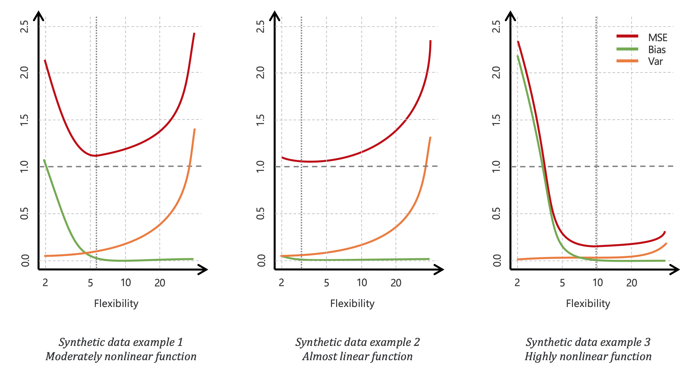
Mô hình linh hoạt nhất không cho lỗi kiểm thử nhỏ nhất — điểm tối ưu nằm ở giữa.
8.
Phát triển và triển khai mô hình học máy
Vòng đời mô hình học máy
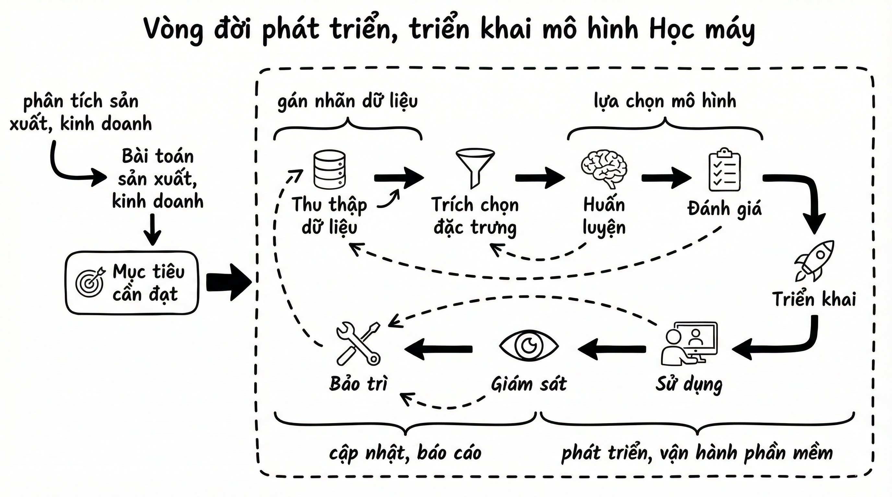
Một mô hình tốt không kết thúc khi đạt độ chính xác cao — phải vận hành, giám sát, cập nhật.
Ba giai đoạn chính
- Phát triển: hiểu bài toán, chuẩn bị dữ liệu, huấn luyện, đánh giá.
- Triển khai: đưa mô hình lên hạ tầng phục vụ, kiểm thử end-to-end.
- Vận hành: theo dõi hiệu năng, phát hiện trôi dữ liệu, huấn luyện lại định kỳ.
⭐️ Đọc thêm tại Mục 1.5 — Giáo trình "Học máy thống kê".
9.
Khi nào dùng
học máy?
Nên dùng khi…
- Không thể viết luật đầy đủ (bài toán phức tạp).
- Môi trường thay đổi (cần thích nghi).
- Bài toán cần “nhận thức”: ảnh, giọng nói, ngôn ngữ.
- Có đủ dữ liệu để học.
Không nên dùng khi…
- Nếu luật đơn giản & ổn định → phương pháp dựa trên luật (rule-based) có thể tốt hơn.
- Nếu dữ liệu ít/khó tin cậy → học máy dễ sai.
- Nếu cần giải thích chặt chẽ → ưu tiên mô hình dễ diễn giải.
Chi phí cần cân nhắc
- Dữ liệu: thu thập, làm sạch, gán nhãn.
- Huấn luyện: thời gian, hạ tầng, thử nghiệm.
- Vận hành: triển khai, giám sát, cập nhật.
Tổng kết
- Học máy = tối ưu \(P\) cho \(T\) trên dữ liệu \(E\).
- Bài toán: \(Y = f(X) + \varepsilon\) — học \(\hat{f}\) gần \(f\).
- Dự đoán vs diễn giải: hai mục tiêu khác nhau.
- Đánh giá trên dữ liệu chưa thấy — tránh khớp quá.
- Độ chệch ↔ phương sai: linh hoạt vừa phải.
- Bốn kiểu học: có / không / bán giám sát, và tăng cường.
Tài liệu tham khảo
- ISLR, Chương 1–2.
- ESL, Chương 1–2, 7.
- Trần Quốc Long & Tạ Việt Cường, Giáo trình Học máy thống kê, Chương 1.
- Muandet & Vreeken, lecture slides — Elements of Machine Learning, Saarland University.